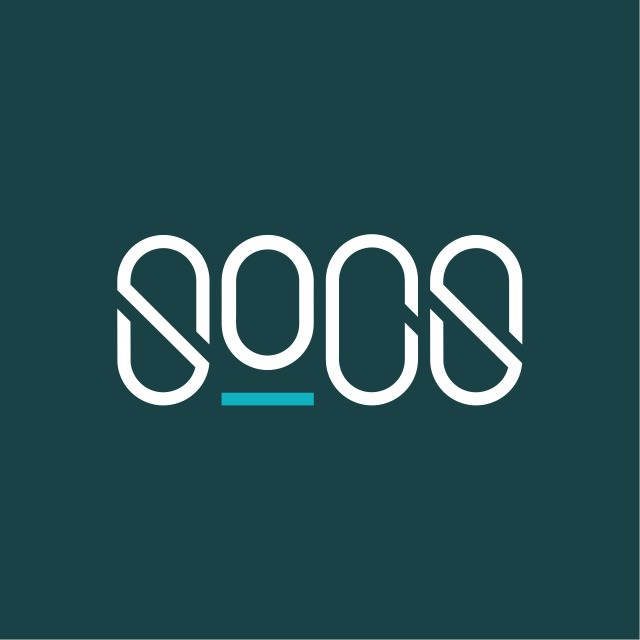

皇仁書院電腦學會2017年開放日

主題：資訊科技與人們的日常生活
我們常常把玩不同的電子裝置，不過你又有認真思考過它們在我們生活中所扮演的角色嗎？不妨在3月3至4日來我校238室加入討論！
Facebook粉絲專頁
: https://qcsox.esy.es/
資訊科技研討會
電子書
3月3日（週五） 11:30
李尚儒委員及姚錦權副屬委員長主講
科技與日常生活之結合
3月3日（週五） 16:30
王浚耀副會長主講
科學運算
3月4日（週六） 12:00
方均正副會長主講
程式編寫之簡介
3月4日（週六） 14:00
蘇俊瑋會長主講
中文輸入之探討
3月4日（週六） 16:00
王浚耀副會長主講
作業系統
3月4日（週六） 17:00
蘇俊瑋會長主講
本次開放日展示重點
電子裝置
實用技能
編程
生活娛樂
小遊戲
自認電腦知識高人一等嗎？歡迎來挑戰一下我們的偵探遊戲！
進入遊戲